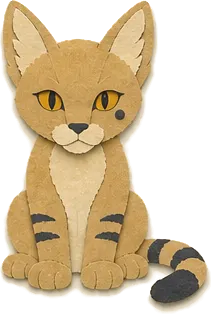
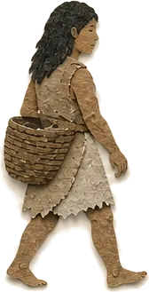
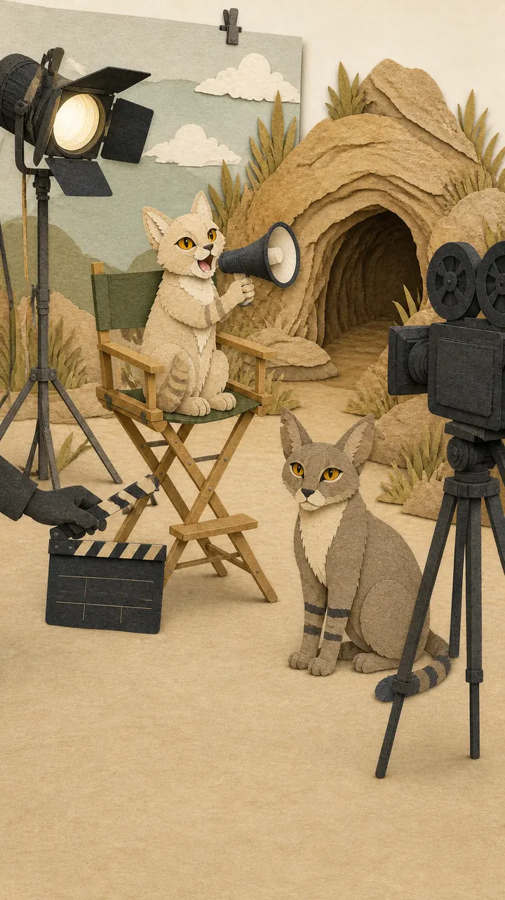

หน้าแรกHome
ตัวละครCharacters
แมวป่า ผู้คน และสัตว์ที่ไคพบริมทะเลสาบ จากซีซันที่ออกอากาศแล้วThe wildcats, people and animals Kai meets by the lake, from the seasons that are out.
ตัวละครหลักMain characters

ไคKai
ทุกซีซันEvery season
แมวป่าแอฟริกันเพศผู้ ขนสีทรายทอง ขามีลายเข้ม ตาสีอำพัน หางมีลายวงและปลายสีเข้ม และมีจุดสีเข้มใต้ตาซ้าย เราพบเขาครั้งแรกตอนเป็นลูกแมวในโพรงหิน เขาโตขึ้นด้วยการเรียนรู้ที่จะนิ่ง ฟัง และรักษาระยะห่างจากผู้คน โดยไม่เคยเป็นสัตว์เลี้ยงของใครA male African wildcat with a sand-gold coat, dark leg markings, amber eyes, a ringed tail with a dark tip and a dark spot below his left eye. We meet him as a kitten in a rocky den. He grows up by learning to be still, to listen and to keep his distance from people, and he never becomes anyone's pet.

ไคตอนเป็นลูกแมวKai as a kitten
ซีซัน 1Season 1
ลูกแมวที่ไม่ห่างจากแม่ ชอบซุกตัวอยู่ในโพรง และเฝ้าดูน้องสาววิ่งออกไปสำรวจโลกข้างนอกA kitten who stays close to his mother, tucked into the den, watching his sister run out to explore.

เซราSera
ซีซัน 1Season 1
แม่ของไค ขนสีน้ำตาลเทาปนทราย ตาสีอำพัน ปลายหางสีเข้ม และมีรอยบากเล็ก ๆ ที่หูขวา ระวังภัยและปกป้องลูก แต่เป็นแมวป่าเสมอ ไม่ใช่แม่แบบมนุษย์ในร่างแมวKai's mother. A gray-brown sandy coat, amber eyes, a dark tail tip and a small notch in her right ear. Watchful and protective, but always a wildcat, never a human parent in costume.

เนฟีNefi
ซีซัน 1Season 1
น้องสาวของไค ช่างสงสัยและใจร้อน มักเป็นตัวแรกที่ก้าวออกไปนอกโพรง ชื่อของเธอมาจากคำอียิปต์โบราณ nefer ที่แปลว่า งดงาม และ ดีKai's younger sister. Curious and impulsive, always the first to step outside the den. Her name comes from the ancient Egyptian nefer, meaning beautiful and good.
ตัวละครรองSupporting characters

ผู้คนริมทะเลสาบThe lakeshore people
ซีซัน 1Season 1
ชุมชนเล็ก ๆ ของชาวประมงและเกษตรกรยุคแรก มีเพิงกกฉาบโคลน ตะกร้า หลุมเก็บเมล็ดพืช และกองไฟ ไคเห็นพวกเขาครั้งแรกจากที่ไกล ๆ ในซีซัน 1A small community of early fishers and farmers, with reed-and-mud shelters, baskets, grain pits and fires. Kai first watches them from far away in Season 1.
ตัวละครพิเศษSpecial appearances
เงาบนฟ้าThe shadow in the sky
ซีซัน 1 ตอนที่ 3 ถึง 4Season 1, EP.03 to 04
นกล่าเหยื่อที่เราเห็นเพียงเงาที่ทาบลงบนทุ่งหญ้า ไม่เคยเห็นตัวA bird of prey seen only as a shadow sweeping over the grass, never the bird itself.
งูThe snake
ซีซัน 1 ตอนที่ 12Season 1, EP.12
แนวหญ้าที่แหวกออกช้า ๆ ในคืนที่เงียบเกินไปJust a curve parting the grass on a night that is far too quiet.

เซราและเนฟี นอกกองถ่ายSera and Nefi, off set
ตอนพิเศษ เบื้องหลังกองถ่าย (เรื่องสมมติ นอกเนื้อเรื่องหลัก)Special: Behind the Scenes (a parody, outside the story)
ตอนพิเศษที่ปล่อยให้นักแสดงพักจากบท เนฟีขอทำผมก่อนเข้าฉาก มีคนขโมยกุ้งที่บุฟเฟต์ เซราขอนอนสักงีบ และใครให้เนฟีนั่งเก้าอี้ผู้กำกับA special where the cast take a break from the story: Nefi wants her fur done before her scene, someone steals the shrimp at the buffet, Sera takes a nap, and who let Nefi sit in the director's chair?